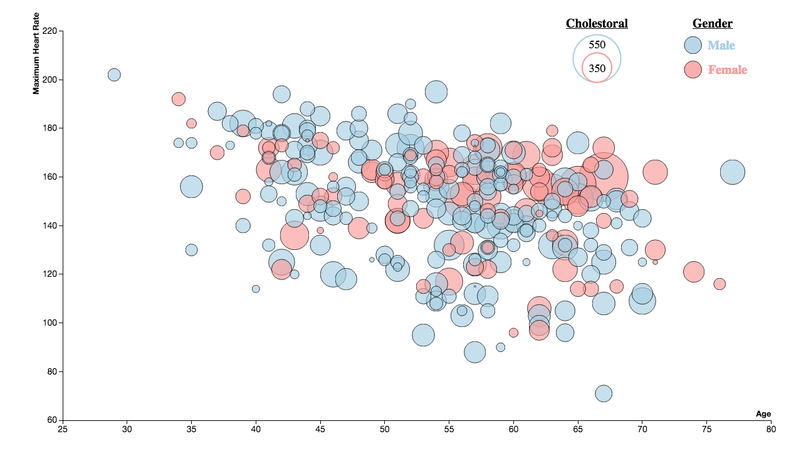
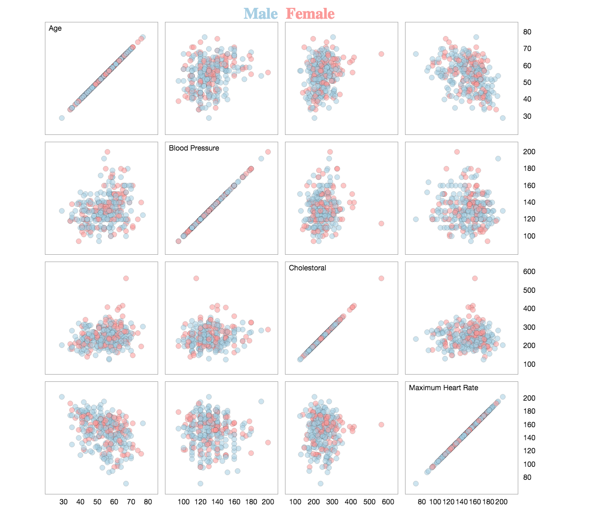
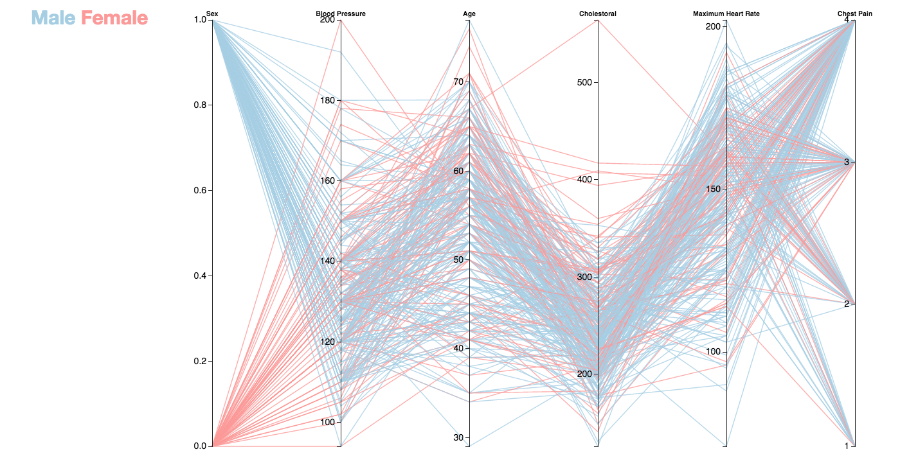

Project Report
Click on one of the snapshots below to explore the interactive visualization and read about the implemented techniques and interactivity.
  The prototype that I demonstrated in-class featured only two visualizations with limited interactivity. I received feedback that I might explore a scatterplot matrix. I was originally going to create a small multiple of histograms for each level of chest pain. However, I felt that the scatterplot matrix idea would allow me to give an overview of trends among many different features. I decided to pursue a scatterplot matrix because of this, and I believe it was a good choice. I also received feedback on techniques used to combat overplotting. In particular, it was brought to my attention that adding a stroke to each circle would help the user distinguish between data points. I found this feedback to be particularly useful as overplotting was an obstacle in each of my visualizations.
The biggest challenge I faced was with my parallel coordinates visualization. Since I was using the parcoords package, I didn't find a way to split the visualization by gender and have brushing applied to one of the plots also apply to the other. I spent some time trying to dynamically filter and pass data points that had been brushed from one plot to the other, but scope of variables and requirements made by the parcoords package inhibited this. This was a motivating factor for combining the two plots into a single parallel coordinates and adding the gender as an axis to allow it to still be subset.
The primary discovery I made using the visualizations I created was the strong influence of age. The scatterplot matrix showed very weak correlations among nearly all combinations of the features. However, the bubble plot visualization shows a patient's maximum heart rate as being negatively correlated with a patient's age. Furthermore, by brushing the age axis in my parallel coordinates visualization and panning up and down, one can see slightly higher cholestoral levels as well as more patients having more severe levels of chest pain.
The influence of age in the data would suggest to me that it would be one of the strongest predictors of the other features in this dataset, which would be very useful information if one were to pursue a machine learning model to predict one of the dataset's features. Other less useful features could be readily discarded as they can be seen to have negligible correlation with the rest of the features, as was noted by my scatterplot matrix.
| David Reilly | |
|---|---|
| Github: | The Data |
| Email: | reillydj116@gmail.com |